T eenage widow Jasmine Durana dries off her 18-month-old daughter, Hazel, after a morning bath, before preparing a fire to make breakfast. Plastic jerrycans hang on the rafters behind her in the one-room slum dwelling she shares with her parents, two brothers and younger sister.
The single mother, who saved for a month to pay for the containers, hopes they will help her to launch a new business selling drinks in the market or near a local school.
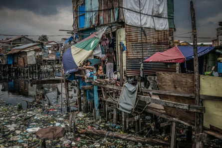The house where Durana’s partner was shot by masked assassins
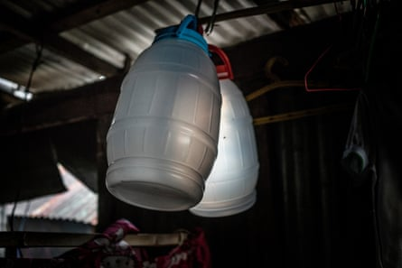The 16-year-old is trying to move on with her life as best she can after her husband was gunned down in an extrajudicial killing. He was among more than 4,500 people killed in the Philippines in what the authorities claim to be lawful anti-drug operations carried out in the two years since President Rodrigo Duterte came to power.
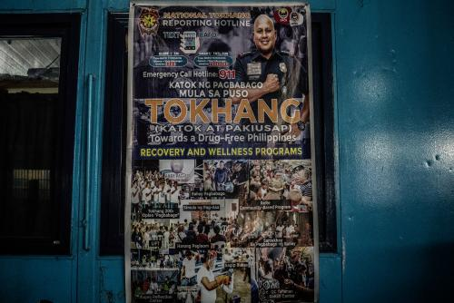Poster promotes the ‘Tokhang’ (drug war) campaign
Human rights groups say the actual number of deaths could be up to three times higher , with police officers routinely executing unarmed suspects and, in many instances, planting drugs or weapons on their victims to justify the killings.
Durana’s daughter was born just a month before her husband, John “Toto” Dela Cruz, 16, was pulled by his hair on to his porch and shot four times in the head and chest.
Durana posts photos of her late husband on social media
Until last year, she was still living in the slum home where Cruz was murdered. She has since moved back in with her parents and siblings for extra support.
Hazel’s biological father, who lives far from Metro Manila on the island of Samar, does not acknowledge the child as his own. But Durana, who met Cruz while she was pregnant, had vowed to support Hazel. She keeps his memory alive by posting photographs of him on social media.
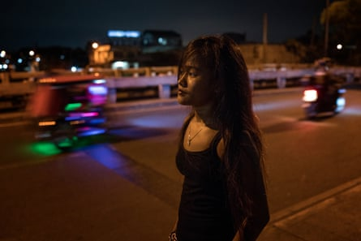Durana, who left mainstream education at the age of nine after her lower leg was crushed in an accident, says her family often goes hungry. Sometimes there is no formula for Hazel.
Malnutrition is a serious issue in the slums of Metro Manila and across the Philippines. The Food Nutrition and Research Institute revealed in 2015 that 33.4% of Filipino children suffer from chronic malnutrition or stunting.
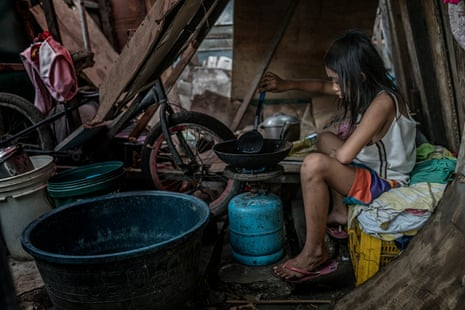Duterte’s war on drugs has left thousands of children living as orphans or in single-parent families struggling to put food on the table.
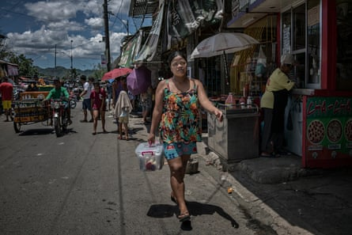Rhoda, a 29-year-old widow, found herself responsible for seven children after her husband, Crisanto,who used to be a rubbish picker at the Payatas dump, was killed by police in a crackdown on illegal drug use. Rhoda was left alone to care for four children from her late husband’s previous marriage, two from her own previous marriage, and one from their marriage together.
An ulcerous infection on her thigh prevented her from working last year, but since January she has been selling beauty products door to door.
Rhoda says she can earn 4,000 pesos a month (£59) from this work. Her children bring in some extra income selling chickens.
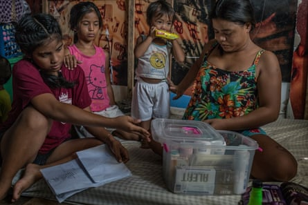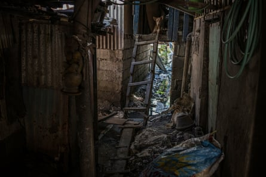Rhoda, 29, was widowed after her husband was killed in Duterte’s war on drugs
The extrajudicial killings that have splintered families have mostly occurred in impoverished areas of Metro Manila, although deaths of this nature have also risen in Cebu and other cities.
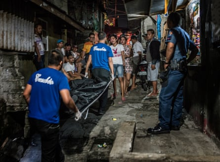The victims, typically poor urban Filipinos, were killed after allegedly fighting back during raids, according to the Philippine National Police (PNP).
Thousands more have been killed throughout the country by unidentified assassins, say campaigners who claim the total number of drug-related deaths in the past two years could be as high as 20,000.
Last month, Duterte vowed to forge ahead with his war on drugs, saying: “It will be as relentless and chilling as on the day it began.”
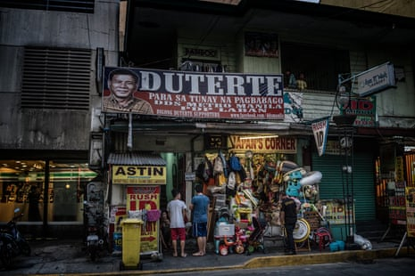Speaking in his third state of the nation address , he also condemned human rights advocates in the country for failing to criticise “drug-lordism, drug dealing and drug pushing”.
Duterte said: “Let me begin by putting it bluntly: the war against illegal drugs is far from over.”
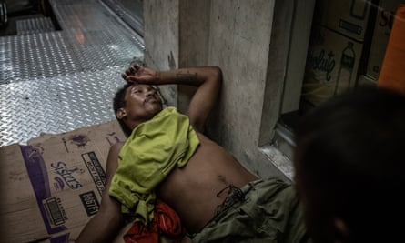He went on to defend his crackdown on narcotics, which has been largely backed by the voting public in the Philippines but has drawn fierce international criticism.
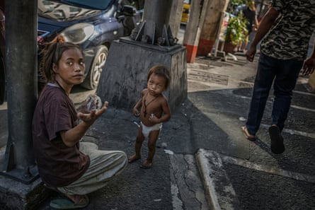
The PNP reports that it has disciplined police officers found to have committed abuses during these raids, but so far no officer has been convicted for “drug war” abuses.
PNP documents obtained by one news organisation showed that 4,540 people had been shot in anti-drugs raids, but thousands of others are believed to have been murdered by state-sponsored “vigilantes”.
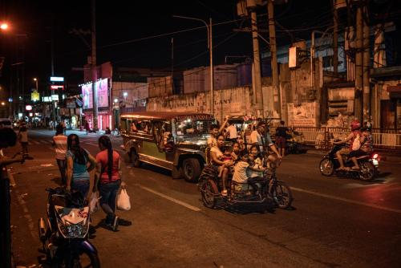Communities have been left reeling from the effects of the campaign.
Last year, Remy Fernandez, then 84, described how she was raising her seven grandchildren after her son, Constantino de Juan, a methamphetamine user, died after masked men burst through his front door and shot him.
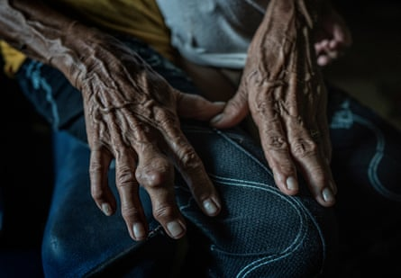The hands of 85-year-old Remy Fernandez, who has looked after seven grandchildren since her son was killed
With the children’s mother jailed after a drug arrest, it was down to her to care for the children, including the youngest, who was born in prison.
One year on, Fernandez’s daughter-in-law, Lourdes, has just been released from prison after serving her drugs sentence. But things are not going smoothly: shortly after her release, she went missing for three days, having left the house drunk and without her mobile phone.
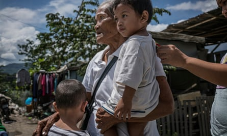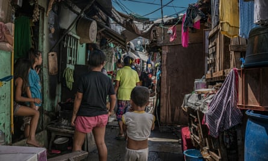The grandmother is worried that her daughter-in-law may fall back into addiction and become a target of the extrajudicial killings.
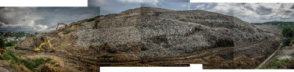The area of Payatas has been plagued by drug use
She worries about who will care for the children if their mother dies. The family, who live next to a contaminated stream draining the Payatas city dump, are already struggling. They relied on the rubbish heap for plastics and recycling to sell, but the site has been closed down.
There are an estimated 1.8 million drug users in the Philippines. The most common drug targeted in police operations is “shabu” or methamphetamine.